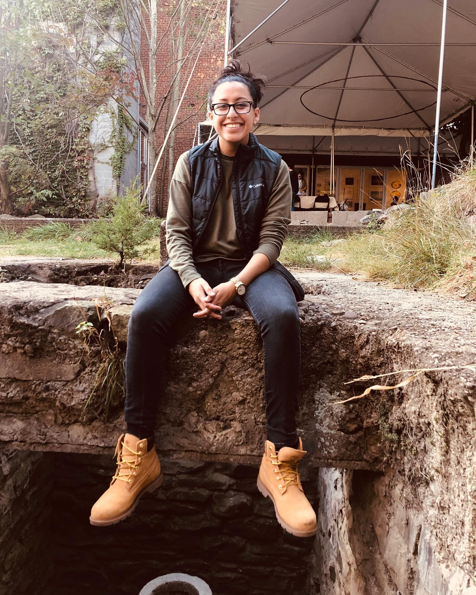

Hi, I'm Alicia
RPA 🧠 | Developer 👩🏻💻
×
An immigrant from South America, I was introduced to technology at the age of 4. My first hands-on experience with computers was with a Windows 98 operating system on the family computer. My love for technology has been strong ever since. I am a certified UiPath Developer and have extended experience in the RPA space. I currently work as a Robotics Process Automation Developer building and designing automation processes for companies in the city. In my free time, I love to travel, skate, video game, and explore the city for new food spots.

Resume
Projects